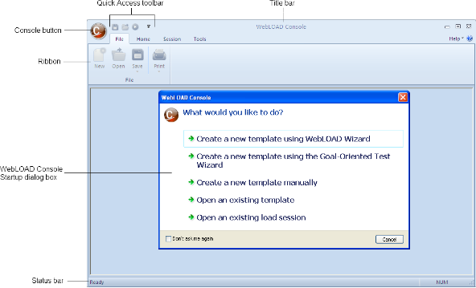

Planning a Test Session
Planning your test is imperative for developing tests that accomplish your load testing objectives. Planning your test helps you:
- Plan the resources required for testing.
- Create templates that accurately emulate your user’s typical working environment.
- Define test success criteria.
This chapter describes the stages involved in planning and executing a test session. It shows you where to find details in this guide about each concept so you can quickly find information of particular interest to your needs.
Load Session Workflow
A Load Session is performed in stages. This chapter explains the planning stage in detail. The rest of the stages are detailed in subsequent chapters.
-
Planning a Load Session
Planning a Load Session involves considering:
-
What you want to test ‒ what application are you going to test?
- What functionality do you want to test ‒ what actions will the users perform?
- How many Virtual Clients you want to simulate?
- How long your test will run?
- What are acceptable results? Acceptable results are defined by your test objective. For example, you can verify:
- Acceptable user response times
- Reliability by running stress tests
- Performance degradation after updates
-
What resources are required for performing the test?
-
Creating Visual Test Scripts
Use WebLOAD Recorder to record the activity you want to test in a Web browser and save it as a script. If you plan to test users performing different activities, you need to record separate visual scripts for each activity. See the WebLOAD Recorder User’s Guide.
-
Creating Load Templates
Creating Load Templates involves defining the participants (Clients and Servers) in the Load Session. The definition includes selecting the scripts to run, the host computers and number of Virtual Clients participating in the Load Session, and scheduling the test. After you create a template it is saved in a *.tpl file. Use the commands in the File tab of the Console ribbon to create, open and save template files.
WebLOAD Console provides three ways for creating Load Templates:
- Using the WebLOAD Wizard to build a basic Load Template. You define the scripts to run, the Load Machines on which to generate the Virtual Clients and the test schedule. After creating a basic template with the wizard, you can change aspects of the configuration through the Console ribbon. For information on creating a template with the WebLOAD Wizard, see Creating Load Templates with the WebLOAD Wizard .
- Using the Goal-Oriented Test Wizard to create goal-seeking performance tests. Rather than running multiple tests to measure the performance at different loads, you can run the Goal-Oriented Test to measure the performance goal that you desire. You define the scripts to run and the goals to achieve, and WebLOAD Console automatically schedules a test and increases the load until your goals are achieved. For information on creating a template with the Goal- Oriented Test Wizard, see Creating Load Templates with Goal-Oriented Test .
-
Manually using the Console ribbon. See Configuring a Load Template Manually for information on defining a template manually.
-
Running a Load Template
After you create the Load Template, you run it. As your test runs, you receive various reports and messages from the various participating hosts. The activity in your test session is displayed on the Console screen. This screen is updated continuously in real time as you work. See Running a Load Session .
-
Analyzing the Test Results
WebLOAD Console displays the results of your Load Session in tabular format and in easy to read graphs.
Forming a Test Plan
Every test must begin with a test plan. When you plan a test session, the first step is to analyze your application to ensure that your test will accurately reflect the working environment of your users. You want to consider the goals of the test and your available resources. Consider the following:
- What application are you testing?
When planning a test, the first thing you should consider is the target of your test. You must define what Web application you plan to test. Your test target is your SUT (System Under Test).
Before planning further, call up a browser and access the site to be tested, to make sure that the connection to the site on the Web is valid.
- What criteria are you testing?
You must know what functionality of the Web application you want to test. Usually you want to test the amount of time required to perform a certain function on the website. You may want to test the time it takes to access a page, the time it takes to submit a form, or the number of clients that can simultaneously access your site.
Using the Goal-Oriented Test, you can test the number of clients that can perform a function, such as accessing a page or submitting a form, at the performance level that you have specified.
When defining the criteria for the test you should consider:
- How many users do you want to simulate?
- How many users are anticipated to connect to your application?
-
How many different user activities do you want to simulate? If you plan to test users performing different activities, you need to create separate scripts for each activity.
-
What type of users do you want to simulate? First time users respond differently to an application than returning users. Using the playback sleep time settings you can set WebLOAD Virtual Clients to run with the recorded sleep time delays, remove all delays to stress the application, or create random delays simulating different users.
-
What type of response time is acceptable? Using the Goal-Oriented Test, you can create test sessions that increase the load and notify you at what load the response time exceeds acceptable levels.
-
What is an acceptable failure rate? Should your test be stopped if a set number or percentage of errors is surpassed?
-
What type of connections speeds do you want to simulate? Using the connection speed settings available with WebLOAD Console you can simulate users connecting through different connections.
-
What types of systems are testing these aspects?
Your test can include Load Machines and Probing Clients. A Load Machine bombards the SUT with a load of Virtual Clients. Load Machine testing gives you an indication of the way your program behaves under the stress of a heavy load.
Probing Client testing is usually performed simultaneously with Load Machine testing. Using a Probing Client, you can test the system performance with other functionality, while the system is undergoing stress testing. For example, you can measure the time required to submit a form, while the SUT is being bombarded by the Load Machine simulating multiple clients calling up a page.
WebLOAD Console generates exact values for Probing Client performance as opposed to averages for Load Machine performance.
Planning a Test Program
The test you devise must be coded in a script file. Scripts define the actions WebLOAD Virtual Clients perform. At this stage, you must plan the test program that you will develop. Your scripts should define the typical tasks you expect users to perform with your Web application.
For example, for a book store application you could create scripts that perform typical shopping activities such as searching for a book, adding books to the shopping cart and checking out. You should also consider your test objectives and define transactions to measure the response times for typical user activities such as searching for a book to ensure your Web application meets your requirements. You can also plan Synchronization Points to emulate peek server loads and ensure your requirements are met even under heavy load. Remember that if your plan indicates that your Load Machine and Probing Client perform different tasks, you need a script for each host.
WebLOAD scripts are created in WebLOAD Recorder. See the WebLOAD Recorder User’s Guide, the WebLOAD Scripting Guide, and the WebLOAD JavaScript Reference Guide for further information on creating Scripts.
Creating the Test Scripts
The simplest way is to create a script is using WebLOAD Recorder that enables you to create a visual script by recording your activity in the browser.
For example, if you want to test the speed at which a certain Web application displays a page, and the speed required to submit a form, you can open WebLOAD Recorder and go to that application through a browser. With WebLOAD Recorder recording your activity, you can display the page desired and submit the form desired.
WebLOAD Recorder saves your browser activity as a visual script. After recording the basic activity, you can add transaction statements to measure the time it takes to display the page.
Figure 39: Visual Script
You can tailor the recorded script, by adding commands and timers available in WebLOAD Recorder. For more information on creating a script with WebLOAD Recorder, see the WebLOAD Recorder User’s Guide.
Note: The script options you define in the Console for your current Session override the options defined in WebLOAD Recorder. For more information on script options, see Setting Script Options .
Examining Your Test Resources
After you know what you are going to test, you must examine the resources that are available to you for running your test. This helps you allocate the resources for your test load. If the computers available to you cannot support the desired load, consider distributing the load over several computers.
Starting WebLOAD Console
When your test plan is complete and your scripts are ready, you can open WebLOAD Console and begin the test configuration process.
To open WebLOAD Console:
-
Verify that all the participating Host computers are properly connected.
-
Select Start > All Programs > RadView > WebLOAD > WebLOAD Console. The Console calls up TestTalk automatically, on its system. The Console opens with the Console Startup dialog box displaying a variety of shortcuts to the various WebLOAD Console components.

To create a new WebLOAD Console template, select one of the three methods available on the Startup dialog box.
- Manual ‒ Create the Load Template by yourself, defining the scripts to run, the number of Virtual Clients to run, the Load Machines on which to generate the load and build a schedule for running the test.
- WebLOAD Wizard ‒ The Wizard helps you through the process of configuring the Load Template.
- Goal-Oriented Test wizard – Define the scripts to run, the Load Machines on which to run the Virtual Clients, and the test goals to achieve, and WebLOAD Console automatically builds a schedule based on your goals.
The easiest way to configure a basic test is through the WebLOAD Wizard. Save your work in the Wizard as a Load Template. After you have closed the WebLOAD Wizard, you can use the Console ribbon to add functionality to your Load Template (*.tpl file).
Creating Load Templates with the WebLOAD Wizard discusses the WebLOAD Wizard. Setting Global Options provides instructions for using the Console features to add functionality to the Load Template created in the WebLOAD Wizard. Creating Load Templates with Goal-Oriented Test provides instructions for configuring a test session running the Goal-Oriented Test feature. Connecting to WebRM provides instructions for connecting the Console to WebRM using the WebRM Wizard. The Console can then request resources from WebRM so it can use the floating license, which is controlled by WebRM.
- Click the TestTalk icon on each host computer participating in the test. (TestTalk is automatically enabled only on the host running the Console.)
If you are using a Solaris or Linux system as a Load Machine, verify that the TestTalk software is running on the Solaris or Linux system. If you have closed TestTalk after the installation, run TestTalk again.
All of the systems participating in the test session, including the system running the Console, the Load Machines, and the Probing Clients must be running the network agent, TestTalk. This establishes communication between participating clients and servers. The SUT does not require TestTalk or any other WebLOAD- specific software.
Note: Do not close TestTalk in the middle of a test session. This can cause unexpected results. When shutting down the system, be sure to shut down the Console first. Then shut down TestTalk.